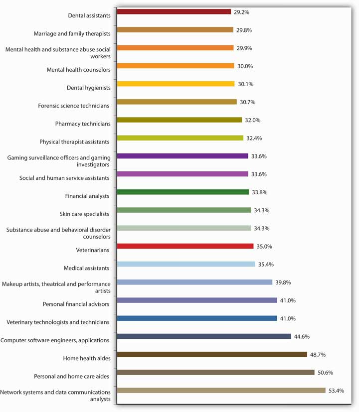
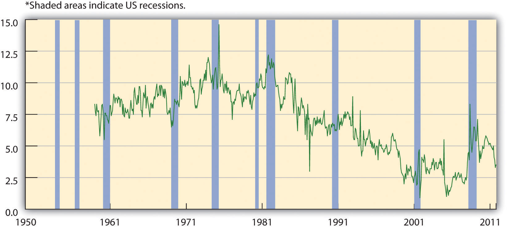
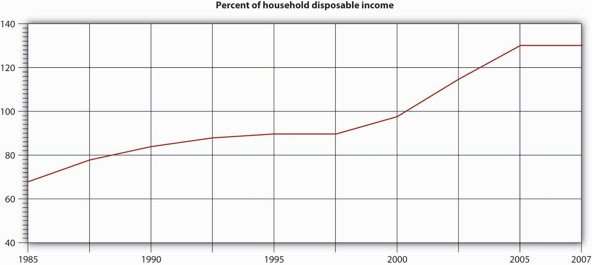

Do you wonder where your money goes? Do you have trouble controlling your spending? Have you run up the balances on your credit cards or gotten behind in your payments and hurt your credit rating? Do you worry about how you’ll pay off your student loans? Would you like to buy a new car or even a home someday and you’re not sure where the money will come from? If you do have extra money, do you know how to invest it? Do you know how to find the right job for you, land an offer, and evaluate the company’s benefits? If these questions seem familiar to you, you could benefit from help in managing your personal finances. This chapter will provide that help.
Let’s say that you’re single and twenty-eight. You have a good education and a good job—you’re pulling down $60K working with a local accounting firm. You have $6,000 in a retirement savings account, and you carry three credit cards. You plan to buy a house (maybe a condo) in two or three years, and you want to take your dream trip to the world’s hottest surfing spots within five years (or, at the most, ten). Your only big worry is the fact that you’re $70,000 in debt, mostly from student loans, your car loan, and credit card debt. In fact, even though you’ve been gainfully employed for a total of six years now, you haven’t been able to make a dent in that $70,000. You can afford the necessities of life and then some, but you’ve occasionally wondered if you’re ever going to have enough income to put something toward that debt.This vignette is adapted from a series titled USA TODAY’s Financial Diet, which ran in USA Today in 2005 (accessed November 10, 2011). Go to http://www.usatoday.com/money/perfi/basics/2005-04-14-financial-diet-excercise1_x.htm and use the embedded links to follow the entire series.
Now let’s suppose that while browsing through a magazine in the doctor’s office, you run across a short personal-finances self-help quiz. There are two sets of three statements each, and you’re asked to check off each statement with which you agree:
At the bottom of the page, you’re asked whether you agreed with any of the statements in Part 1 and any of the statements in Part 2. It turns out that you answered yes in both cases and are thereby informed that you’re probably jeopardizing your entire financial future.
Unfortunately, personal-finances experts tend to support the author of the quiz: if you agreed with any statement in Part 1, you have a problem with splurging; if you agreed with any statement in Part 2, your monthly bills are too high for your income.
So, you have a financial problem: according to the quick test you took, you’re a splurger and your bills are too high for your income. How does this put you at risk? If you get in over your head and can’t make your loan or rent payments on time, you risk hurting your credit—your ability to borrow in the future.
Let’s talk about your credit. How do potential lenders decide whether you’re a good or bad credit risk? If you’re a poor credit risk, how does this affect your ability to borrow, or the rate of interest you have to pay, or both? Here’s the story. Whenever you use credit, those you borrow from (retailers, credit card companies, banks) provide information on your debt and payment habits to three national credit bureaus: Equifax, Experian, and TransUnion. The credit bureaus use the information to compile a numerical credit score, generally called a FICO score; it ranges from 300 to 900, with the majority of people falling in the 600–700 range. (Here’s a bit of trivia to bring up at a dull party: FICO stands for Fair Isaac Company—the company that developed the score.) In compiling the score, the credit bureaus consider five criteria: payment history—do you pay your bills on time? (the most important), total amount owed, length of your credit history, amount of new credit you have, and types of credit you use. The credit bureaus share their score and other information about your credit history with their subscribers.
So what does this do for you? It depends. If you paid your bills on time, carried only a reasonable amount of debt, didn’t max out your credit cards, had a history of borrowing, hadn’t applied for a bunch of new loans, and borrowed from a mix of lenders, you’d be in good shape. Your FICO score would be high and lenders would like you. Because of your high credit score, they’d give you the loans you asked for at reasonable interest rates. But if your FICO score is low (perhaps you weren’t so good at paying your bills on time), lenders won’t like you and won’t lend you money (or would lend it to you at high interest rates). A low FICO score can raise the amount you have to pay for auto insurance and cell phone plans and can even affect your chances of renting an apartment or landing a particular job. So it’s very, very, very (the last “very” is for emphasis) important that you do everything possible to earn a high credit score. If you don’t know your score, here is what you should do: go to https://www.quizzle.com/ and request a free copy of your credit report.
As a young person, though, how do you build a credit history that will give you a high FICO score? Your means for doing this changed in 2009 with the passage of the Credit CARD Act, federal legislation designed to stop credit card issuers from treating its customers unfairly.LaToya Irby, “10 Key Changes of the New Credit Card Rules,” About.com, http://credit.about.com/od/consumercreditlaws/tp/new-credit-card-rules.htm (accessed November 10, 2011). Based on feedback from several financial experts, Emily Starbuck Gerson and Jeremy Simon of CreditCards.com compiled the following list of ways students can build good credit.Emily Starbuck Gerson and Jeremy M. Simon, “10 Ways Students Can Build Good Credit,” CreditCards.com, http://www.creditcards.com/credit-card-news/help/10-ways-students-get-good-credit-6000.php (accessed November 10, 2011).
What if you’ve already damaged your credit score—what can you do to raise it? Do what you should have done in the first place: pay your bills on time, pay more than the minimum balance due on your credit cards and charge cards, keep your card balances low, and pay your debts off as quickly as possible. Also, scan your credit report for any errors. If you find any, work with the credit bureau to get them corrected.
Because your financial problem was brought on, in part, because you have too much debt, you should stop borrowing. But, what if your car keeps breaking down and you’re afraid of getting stuck on the road some night? So, you’re thinking of replacing it with a used car that costs $10,000. Before you make a final decision to incur the debt, you should understand its costs. The rate of interest matters a lot. Let’s compare three loans at varying interest rates: 6, 10, and 14 percent. We’ll look at the monthly payment, as well as the total interest paid over the life of the loan.
| $10,000 Loan for 4 Years at Various Interest Rates | |||
|---|---|---|---|
| Interest Rate | 6% | 10% | 14% |
| Monthly Payment | $235 | $254 | $273 |
| Total Interest Paid | $1,272 | $2,172 | $3,114 |
If your borrowing interest rate is 14 percent, rather than 6 percent, you’ll end up paying an additional $1,842 in interest over the life of the loan. Your borrowing cost at 14 percent is more than twice as much as it is at 6 percent. The conclusion: search for the best interest rates and add the cost of interest to the cost of whatever you’re buying before deciding whether you want it and can afford it. If you have to borrow the money for the car at the 14 percent interest rate, then the true cost of the car isn’t $10,000, but rather $13,114.
Now, let’s explore the complex world of credit cards. First extremely important piece of information: not all credit cards are equal. Second extremely important piece of information: watch out for credit card fees! Credit cards are a way of life for most of us. But they can be very costly. Before picking a credit card, do your homework. A little research can save you a good deal of money. There are a number of costs you need to consider:
An alternative to a credit card is a debit cardPulls money out of your checking account whenever you use the card to buy something or get cash from an ATM., which pulls money out of your checking account whenever you use the card to buy something or get cash from an ATM. These cards don’t create a loan when used. So, are they better than credit cards? It depends—each has its advantages and disadvantages. A big advantage of a credit card is that it helps you build credit. A disadvantage is that you can get in over your head in debt and possibly miss payments (thereby incurring a late payment fee). Debit cards help control spending. Theoretically, you can’t spend more than you have in your checking account. But be careful—if you don’t keep track of your checking account balance, it’s easy to overdraft your account when using your debit card. Prior to July 2010, most banks just accepted purchases or ATM withdrawals even if a customer didn’t have enough money in his or her account to cover the transaction. The banks didn’t do this to be nice, and they didn’t ask customers if they wanted this done—they just overdrafted the customer’s account and charged the customer a hefty overdraft fee of around $35 through what they call an “overdraft protection program.”Kathy Chu,” Debit Card Overdraft Fees Hit Record Highs,” USA Today, January 24, 2007, http://www.usatoday.com/money/perfi/credit/2007-01-24-debit-card-fees_x.htm (accessed November 11, 2011). Overdraft fees can be quite expensive, particularly if you used the card to purchase a hamburger and soda at a fast-food restaurant.
The Federal Reserve changed the debit card rules in 2010, and now banks must get your permission before they enroll you in an overdraft protection program.“What You Need to Know: Bank Account Overdraft Fees,” Board of Governors of the Federal Reserve System, http://www.federalreserve.gov/consumerinfo/wyntk_overdraft.htm (accessed November 10, 2011).If you opt in (agree), things work as before: You can spend or take out more money through an ATM machine than you have in your account, and the bank lets you do this. But it charges you a fee of about $30 plus additional fees of $5 per day if you don’t cover the overdraft in five days. If you don’t opt in, the bank will not let you overdraft your account. The downside is that you could get embarrassed at the cash register when your purchase is rejected or at a restaurant when trying to pay for a meal. Obviously, you want to avoid being charged an overdraft fee or being embarrassed when paying for a purchase. Here are some things you can do to decrease the likelihood that either would happen:Connie Prater, “Consumers to Fed: Stop Debit Card Overdraft Opt-In ‘Scare’ Tactics: New Debit Card Overdraft Rules Slated to Start July 1, 2010,” CreditCards.com, http://www.creditcards.com/credit-card-news/debit-card-overdraft-fee-opt-in-rules-1282.php (accessed November 10, 2011).
What should you do now to turn things around—to start getting out of debt? According to many experts, you need to take two steps:
Step 1 in this abbreviated two-step personal-finances “plan” is probably the easier of the two, but taking even this step can be hard enough. In fact, a lot of people would find it painful to give up their credit cards, and there’s a perfectly logical reason for their reluctance: the degree of pain that one would suffer from destroying one’s credit cards probably stands in direct proportion to one’s reliance on them.
As of May 2011, total credit card debt in the United States is about $780 billion, out of $2.5 trillion in total consumer debt. Closer to home, one recent report puts average credit card debt per U.S. household at $16,000 (up 100 percent since 2000). The 600 million credit cards held by U.S. consumers carry an average interest rate on these cards of 15 percent.“Credit Card Statistics, Industry Facts, Debt Statistics,” CreditCards.com, http://www.creditcards.com/credit-card-news/credit-card-industry-facts-personal-debt-statistics-1276.php (accessed November 10, 2011). Why are these numbers important? Primarily because, on average, too many consumers have debt that they simply can’t handle. “Credit card debt,” says one expert on the problem, “is clobbering millions of Americans like a wrecking ball,”U.S. Senator Ron Wyden, quoted in “Avoiding the Pitfalls of Credit Card Debt” (Center for American Progress Action Fund, 2008), http://www.americanprogressaction.org/issues/2008/avoiding_pitfalls.html (accessed September 13, 2008). and if you’re like most of us, you’d probably like to know whether your personal-finances habits are setting you up to become one of the clobbered.
If, for example, you’re worried that your credit card debt may be overextended, the American Bankers Association suggests that you ask yourself a few questions:Joshua Lipton, “Choking On Credit Card Debt,” Forbes.com, September 12, 2008, http://www.forbes.com/finance/2008/09/12/credit-card-debt-pf-ii-in_jl_0911creditcards_inl.html (accessed November 11, 2011).
If such habits as these have helped you dig yourself into a hole that’s steadily getting deeper and steeper, experts recommend that you take three steps as quickly as possible:Joshua Lipton, “Choking On Credit Card Debt,” Forbes.com, September 12, 2008, http://www.forbes.com/finance/2008/09/12/credit-card-debt-pf-ii-in_jl_0911creditcards_inl.html (accessed November 11, 2011).
And, if you find you’re unable to pay your debts, don’t hide from the problem, as it will not go away. Call your lenders and explain the situation. They should be willing to work with you in setting up a payment plan. If you need additional help, contact a nonprofit credit assistance group such as the National Foundation for Credit Counseling (http://www.nfcc.org).
Now, it’s time to tackle step 2 of our recommended personal-finances miniplan: do whatever you can to bring down your monthly bills. As we said, many people may find this step easier than step 1—cutting up your credit cards and starting to live on a cash-only basis.
If you want to take a gradual approach to step 2, one financial planner suggests that you perform the following “exercises” for one week:Financial planner Elissa Buie helped to develop USA TODAY’s Financial Diet.
Among other things, you’ll probably be surprised at how much of your money can become somebody else’s money on a week-by-week basis. If, for example, you spend $3 every day for one cup of coffee at a coffee shop, you’re laying out nearly $1,100 a year. If you use your ATM card at a bank other than your own, you’ll probably be charged a fee that can be as high as $3. The average person pays more than $60 a year in ATM fees, and if you withdraw cash from an ATM twice a week, you could be racking up $300 in annual fees. As for your ATM receipts, they’ll tell you whether, on top of the fee that you’re charged by that other bank’s ATM, your own bank is also tacking on a surcharge.Sun Trust Banks, “Money Management” (2008), http://www.suntrusteducation.com/toolbox/moneymgt_spendless.asp (accessed September 16, 2008); “Reduce ATM Fees—Daily Financial Tip,” SavingAdvice.com, April 5, 2006, http://www.savingadvice.com/blog/2006/04/05/10533_reduce-atm-fees-daily-financial-tip.html; Marshall Loeb, “Four Ways to Keep ATM Fees from Draining Your Bank Account,” MarketWatch (June 14, 2007), http://www.marketwatch.com/news/story/four-ways-keep-atm-fees/story.aspx?guid=%7BEFB2C425-B7F8-40C4-8720-D684A838DBDA%7D (accessed November 11 2011); Kate Rosenberger, “How to Avoid ATM Fees,” Helium (2008), http://www.helium.com/items/1100945-how-to-avoid-atm-fees (accessed November 11, 2011).
If this little exercise proves enlightening—or if, on the other hand, it apparently fails to highlight any potential pitfalls in your spending habits—you might devote the next week to another exercise:
The obvious question that you need to ask yourself at the end of week 2 is, “how much did I save?” An equally interesting question, however, is, “what can I do without?” One survey asked five thousand financial planners to name the two expenses that most consumers should find easiest to cut back on. Figure 14.2 "Reducible Expenses" shows the results.
Figure 14.2 Reducible Expenses

You may or may not be among the American consumers who buy thirty-five million cans of Bud Light each and every day, or 150,000 pounds of Starbucks coffee, or 2.4 million Burger King hamburgers, or 628 Toyota Camrys. Yours may not be one of the 70 percent of U.S. households with an unopened consumer-electronics product lying around.Michael Arrington, “eBay Survey Says Americans Buy Crap They Don’t Want,” TechCrunch, August 21, 2008, http://techcrunch.com/2008/08/21/ebay-survey-says-americans-buy-crap-they-dont-want/ (accessed November 11, 2011). And you may or may not be ready to make some major adjustments in your personal-spending habits, but if, at age twenty-eight, you have a good education and a good job, a $60,000 income, and a $70,000 debt—by no means an implausible scenario—there’s a very good reason why you should think hard about controlling your modest share of that $2.5 trillion in U.S. consumer debt: your level of indebtedness will be a key factor in your ability—or inability—to reach your longer-term financial goals, such as home ownership, a dream trip, and, perhaps most important, a reasonably comfortable retirement.
The great English writer Samuel Johnson once warned, “Do not accustom yourself to consider debt only as an inconvenience; you will find it a calamity.” In Johnson’s day, you could be locked up for failing to pay your debts; there were even so-called debtors’ prisons for the purpose, and we may suppose that the prospect of doing time for owing money was one of the things that Johnson had in mind when he spoke of debt as a potential “calamity.” We don’t expect that you’ll ever go to prison on account of indebtedness, and we won’t suggest that, say, having to retire to a condo in the city instead of a tropical island is a “calamity.” We’ll simply say that you’re more likely to meet your lifetime financial goals—whatever they are—if you plan for them. What you need to know about planning for and reaching those goals is the subject of this chapter.
As a young person, you should do the following to build a good credit history that will give you a high FICO score.
(AACSB) Analysis
There are a number of costs associated with the use of a credit card, including finance charges, annual fee, over-limit fee, late payment fee, and cash advance fee. Identify these costs for a credit card you now hold. If you don’t presently have a credit card, go online and find an offer for one. Check out these costs for the card being offered.
Before we go any further, we need to nail down a couple of key concepts. First, just what, exactly, do we mean by personal finances? Finance itself concerns the flow of money from one place to another, and your personal finances concern your money and what you plan to do with it as it flows in and out of your possession. Essentially, then, personal financeThe application of financial principles to the monetary decisions of an individual or a family. is the application of financial principles to the monetary decisions that you make either for your individual benefit or for that of your family.
Second, as we suggested in Section 14 "Where Does Your Money Go?"—and as we’ll insist in the rest of it—monetary decisions work out much more beneficially when they’re planned rather than improvised. Thus our emphasis on financial planningThe process of managing your personal finances to meet goals that you’ve set for yourself or your family.—the ongoing process of managing your personal finances in order to meet goals that you’ve set for yourself or your family.
Financial planning requires you to address several questions, some of them relatively simple:
Others will require some investigation and calculation:
Still others will require some forethought and forecasting:
Another question that you might ask yourself—and certainly would do if you were a professional in financial planning—is something like, “How will my financial plans change over the course of my life?” Figure 14.3 "Financial Life Cycle" illustrates the financial life cycle of a typical individual—one whose financial outlook and likely outcomes are probably a lot like yours.This section is based on Arthur J. Keown, Personal Finance: Turning Money into Wealth, 4th ed. (Upper Saddle River, NJ: Pearson Education, 2007), 8–11. As you can see, our diagram divides this individual’s life into three stages, each of which is characterized by different life events (such as beginning a family, buying a home, planning an estate, retiring). At each stage, too, there are recommended changes in the focus of the individual’s financial planning:
Figure 14.3 Financial Life Cycle

At each stage, of course, complications can set in—say, changes in such conditions as marital or employment status or in the overall economic outlook. Finally, as you can also see, your financial needs will probably peak somewhere in stage 2, at approximately age fifty-five, or ten years before typical retirement age.
Until you’re eighteen or so, you probably won’t generate much income; for the most part, you’ll be living off your parents’ wealth. In our hypothetical life cycle, however, financial planning begins in the individual’s early twenties. If that seems like rushing things, consider a basic fact of life: this is the age at which you’ll be choosing your career—not only the sort of work you want to do during your prime income-generating years, but also the kind of lifestyle you want to live in the process.See Arthur J. Keown, Personal Finance: Turning Money into Wealth, 4th ed. (Upper Saddle River, NJ: Pearson Education, 2007), 11.
What about college? Most readers of this book, of course, have decided to go to college. If you haven’t yet decided, you need to know that college is an extremely good investment of both money and time.
Table 14.1 "Education and Average Income", for example, summarizes the findings of a study conducted by the U.S. Census Bureau.U.S. Census Bureau, “One-Third of Young Women Have Bachelor’s Degrees” (U.S. Department of Commerce, January 10, 2008), http://www.census.gov/Press-Release/www/releases/archives/education/011196.html (accessed September 18, 2008). A quick review shows that people who graduate from high school can expect to increase their average annual earnings by about 49 percent over those of people who don’t, and those who go on to finish college can expect to generate 82 percent more annual income than that. Over the course of the financial life cycle, families headed by those college graduates will earn about $1.6 million more than families headed by high school graduates who didn’t attend college. (With better access to health care—and, studies show, with better dietary and health practices—college graduates will also live longer. And so will their children.)Adapted from U.S. Census Bureau, “One-Third of Young Women Have Bachelor’s Degrees,” U.S. Department of Commerce, January 10, 2008, http://www.census.gov/Press-Release/www/releases/archives/education/011196.html (accessed September 18, 2008).
Table 14.1 Education and Average Income
| Education | Average income | Percentage increase over next-highest level |
|---|---|---|
| High school dropout | $20,873 | — |
| High school diploma | $31,071 | 48.9% |
| College degree | $56,788 | 82.8% |
| Advanced higher-education degree | $82,320 | 45.0% |
And what about the debt that so many people accumulate to finish college? For every $1 that you spend on your college education, you can expect to earn about $35 during the course of your financial life cycle.See Katharine Hansen, “What Good Is a College Education Anyway?” Quintessential Careers (2008), http://www.quintcareers.com/college_education_value.html (accessed November 11, 2011). At that rate of return, you should be able to pay off your student loans (unless, of course, you fail to practice reasonable financial planning).
Naturally, there are exceptions to these average outcomes. You’ll find English-lit majors stocking shelves at 7-Eleven, and you’ll find college dropouts running multibillion-dollar enterprises. Microsoft cofounder Bill Gates dropped out of college after two years, as did his founding partner, Paul Allen. Current Microsoft CEO Steve Ballmer finished his undergraduate degree but quit his MBA program to join Microsoft (where he apparently fit in among the other dropouts in top management). It’s always good to remember, however, that though exceptions to rules (and average outcomes) occasionally modify the rules, they invariably fall far short of disproving them: in entrepreneurship as in most other walks of adult life, the better your education, the more promising your financial future. One expert in the field puts the case for the average person bluntly: educational credentials “are about being employable, becoming a legitimate candidate for a job with a future. They are about climbing out of the dead-end job market.”John G. Ramsay, Perlman Center for Learning and Teaching, quoted by Katharine Hansen, “What Good Is a College Education Anyway?” Quintessential Careers (2008), http://www.quintcareers.com/college_education_value.html (accessed November 11, 2011).
Finally, does it make any difference what you study in college? To a perhaps surprising extent, not necessarily. Some career areas, such as engineering, architecture, teaching, and law, require targeted degrees, but the area of study designated on your degree often doesn’t matter much when you’re applying for a job. If, for instance, a job ad says, “Business, communications, or other degree required,” most applicants and hires will have those “other” degrees. When poring over résumés for a lot of jobs, potential employers look for the degree and simply note that a candidate has one; they often don’t need to focus on the particulars.See J. D. Roth, “The Value of a College Education,” Get Rich Slowly, January 10, 2008, http://www.getrichslowly.org/blog/2008/01/10/the-value-of-a-college-education/ (accessed November 11, 2011).
This is not to say, however, that all degrees promise equal job prospects. Figure 14.4 "Top 25 Fastest-Growing Jobs, 2006–2016", for example, summarizes a U.S. Bureau of Labor Statistics projection of the thirty fast-growing occupations for the years 2006–2016. Veterinary technicians and makeup artists will be in demand as never before, but as you can see, occupational prospects are fairly diverse.http://data.bls.gov/cgi-bin/print.pl/news.release/ecopro.t06.htm (November 11, 2011).
Figure 14.4 Top 25 Fastest-Growing Jobs, 2006–2016
Nor, of course, do all degrees pay off equally. In Table 14.2 "College Majors and Average Annual Earnings", we’ve extracted the findings of a study conducted by the National Science Foundation on the earnings of individuals with degrees in various undergraduate fields.Daniel Penrice, “Major Moolah: Adding Up the Earnings Gaps in College Majors,” N.U. Magazine, January 1999, http://www.northeastern.edu/magazine/9901/labor.html (accessed November 11, 2011). Data from Paul Harrington and Andrew Sum, “The Post-College Earnings Experiences of Bachelor Degree Holders in the U.S.: Estimated Economic Returns to Major Fields of Study,” in Learning and Work on Campus and on the Job: The Evolving Relationship between Higher Education and Employment, ed. S. Reder, B. A. Holland, and M. P. Latiolais (in preparation). Clearly, some degrees—notably in the engineering fields—promise much higher average earnings than others. Chemical engineers, for instance, can earn nearly twice as much as elementary school teachers, but there’s a catch: if you graduate with a degree in chemical engineering, your average annual salary will be about $67,000 if you can find a job related to that degree; if you can’t, you may have to settle for as much as 40 percent less.Daniel Penrice, “Major Moolah: Adding Up the Earnings Gaps in College Majors,” N.U. Magazine, January 1999, http://www.northeastern.edu/magazine/9901/labor.html (accessed November 11, 2011). (Supermodel Cindy Crawford cut short her studies in chemical engineering because there was more money to be made on the runway.)
Table 14.2 College Majors and Average Annual Earnings
| Major | Average Earnings with Bachelor’s Degree | Major | Average Earnings with Bachelor’s Degree |
|---|---|---|---|
| Chemical engineering | $67,425 | History | $45,926 |
| Aerospace engineering | $65,649 | Biology | $45,532 |
| Computer engineering | $62,527 | Nursing | $45,538 |
| Physics | $62,104 | Psychology | $43,963 |
| Electrical engineering | $61,534 | English | $43,614 |
| Mechanical engineering | $61,382 | Health technology | $42,524 |
| Industrial engineering | $61,030 | Criminal justice | $41,129 |
| Civil engineering | $58,993 | Physical education | $40,207 |
| Accounting | $56,637 | Secondary education | $39,976 |
| Finance | $55,104 | Fine arts | $38,857 |
| Computer science | $52,615 | Philosophy | $38,239 |
| Business management | $52,321 | Dramatic arts | $37,091 |
| Marketing | $51,107 | Music | $36,811 |
| Journalism | $46,835 | Elementary education | $34,564 |
| Information systems | $46,519 | Special education | $34,196 |
In short, when you’re planning what to do with the rest of your life, it’s a good idea to check into the fine points and realities, as well as the statistical data. If you talk to career counselors and people in the workforce, you might be surprised by what you learn about the relationship between certain college majors and various occupations. Onetime Hewlett-Packard CEO Carly Fiorina majored in medieval history and philosophy.
Let’s revisit one of the facts included in the earlier discussion: for every $1 that you spend on your college education, you can expect to earn about $35 during the course of your financial life cycle. And let’s say you’re convinced (as you should be) that getting a college degree is a wise financial choice. You still have to deal with the cost of getting your degree. We’re sure this won’t come as a surprise: attending college is expensive—tuition and fees have gone up sharply, the cost of books has skyrocketed, and living expenses have climbed. Many students can attend college only if they receive some type of financial aid. Though the best way to learn what aid is available to you is to talk with a representative in the financial aid office at your school, this section provides an overview of the types of aid offered to students. Students finance their education through scholarships, grants, education loans, and work-study programs.Denise Witmer, “The Basics of Financial Aid for College,” About.com, http://parentingteens.about.com/od/collegeinfo/a/financial_aid.htm (accessed November 11, 2011). We’ll explore each of these categories of aid:
As was highlighted earlier, your financial life cycle begins at the point when you choose a career. Building your career takes considerable planning. It begins with the selection of a major in college and continues through graduation as you enter the workforce full time. You can expect to hold a number of jobs over your working life. If things go as they should, each job will provide valuable opportunities and help you advance your career. A big challenge is getting a job offer in your field of interest, evaluating the offer, and (if you have several options) selecting the job that’s right for you.This section is based in part on sections 13 and 14 of the Playbook for Life by The Hartford. The Playbook can be found on line at http://www.playbook.thehartford.com (accessed November 11, 2011).
Most likely your college has a career center. The people working there can be a tremendous help to you as you begin your job search. But most of the work has to be done by you. Like other worthwhile projects, your job search project will be very time-consuming. As you get close to graduation, you’ll need to block out time to work on this particularly important task.
The first step is to prepare a résuméA document that provides a summary of educational achievements and relevant job experience., a document that provides a summary of educational achievements and relevant job experience. Its purpose is to get you an interview. A potential employer will likely spend less than a minute reviewing your résumé, so its content should be concise, clear, and applicable to the job for which you’re applying. For some positions, the person in charge of hiring might read more than a hundred résumés. If you don’t want your résumé kicked out right away, be sure it contains no typographical or grammatical errors. Once you’ve completed your résumé, you can use it to create different versions tailored to specific companies you’d like to work for. Your next step is to write a cover letterA document accompanying your résumé that explains why you’re sending your résumé and highlights your qualifications., a document accompanying your résumé that explains why you’re sending your résumé and highlights your qualifications. You can find numerous tips on writing résumés and cover letters (as well as samples of both) online. Be sure your résumé is accurate: never lie or exaggerate in a résumé. You could get caught and not get the job (or—even worse—you could get the job, get caught, and then get fired). It’s fairly common practice for companies to conduct background checks of possible employees, and these checks will point out any errors. In effect, says one expert, “you jeopardize your future when you lie about your past.”Kim Isaacs, “Lying on Your Resume: What Are the Career Consequences?,” Monster.com, http://insidetech.monster.com/careers/articles/3574-lying-on-your-resume-what-are-the-career-consequences (accessed November 11, 2011)
After writing your résumé and cover letter, your next task is to create a list of companies you’d like to work for. Use a variety of sources, including your career services office and company Web sites, to decide which companies to put on your list. Visit the “career or employment” section of the company Web sites and search for specific openings.
You could also conduct a general search for positions that might be of interest to you, by doing the following:
Once you spot a position you want, send your résumé and cover letter (tailored to the specific company and job). Follow up in a few days to be sure your materials got to the right place, and offer to provide any additional information. Keep notes on all contacts.
When you’re invited for an interview, visit to the company’s Web site and learn as much as you can about the company. Practice answering questions you might be asked during the interview, and think up a few pertinent questions to ask your interviewer. Dress conservatively—males should wear a suit and tie and females should wear professional-looking clothes. Try to relax during the interview (though everyone knows this isn’t always easy). Your goal is to get an offer, so let the interviewer learn who you are and how you can be an asset to the company. Send a thank-you note (or thank-you e-mail) to the interviewer after the interview.
Let’s be optimistic and say that you did quite well in your interviews, and you have two job offers. It’s a great problem to have, but now you have to decide which one to accept. Salary is important, but it’s clearly not the only factor. You should consider the opportunities the position offers: will you learn new things on the job, how much training will you get, could you move up in the organization (and if so, how quickly)? Also consider quality of life issues: how many hours a week will you have to work, is your schedule predictable (or will you be asked to work on a Friday night or Saturday at the last minute), how flexible is your schedule, how much time do you get off, how stressful will the job be, do you like the person who will be your manager, do you like your coworkers, how secure is the job, how much travel is involved, where’s the company located, and what’s the cost of living in that area? Finally, consider the financial benefits you’ll receive. These could include health insurance, disability insurance, flexible spending accounts, and retirement plans. Let’s talk more about the financial benefits, beginning with health insurance.
The financial life cycle divides an individual’s life into three stages, each of which is characterized by different life events. Each stage also entails recommended changes in the focus of the individual’s financial planning:
To conduct a general search for positions that might be of interest to you, you could:
When comparing job offers, consider more than salary. Also of importance are quality of life issues and benefits. Common financial benefits include health insurance, disability insurance, flexible spending accounts, and retirement plans.
(AACSB) Analysis
Think of the type of job you’d like to have. Describe the job and indicate how you’d go about getting a job offer for this type of job. How would you evaluate competing offers from two companies? What criteria would you use in selecting the right job for you?
The fact that you have to choose a career at an early stage in your financial life cycle isn’t the only reason that you need to start early on your financial planning. Let’s assume, for instance, that it’s your eighteenth birthday and that on this day you take possession of $10,000 that your grandparents put in trust for you. You could, of course, spend it; in particular, it would probably cover the cost of flight training for a private pilot’s license—something you’ve always wanted but were convinced that you couldn’t afford for another ten or fifteen years. Your grandfather, of course, suggests that you put it into some kind of savings account. If you just wait until you finish college, he says, and if you can find a savings plan that pays 5 percent interest, you’ll have the $10,000 plus another $2,209 to buy a pretty good used car.
The total amount you’ll have— $12,209—piques your interest. If that $10,000 could turn itself into $12,209 after sitting around for four years, what would it be worth if you actually held on to it until you did retire—say, at age sixty-five? A quick trip to the Internet to find a compound-interest calculator informs you that, forty-seven years later, your $10,000 will have grown to $104,345 (assuming a 5 percent interest rate). That’s not really enough to retire on, but after all, you’d at least have some cash, even if you hadn’t saved another dime for nearly half a century. On the other hand, what if that four years in college had paid off the way you planned, so that (once you get a good job) you’re able to add, say, another $10,000 to your retirement savings account every year until age sixty-five? At that rate, you’ll have amassed a nice little nest egg of slightly more than $1.6 million.
In your efforts to appreciate the potential of your $10,000 to multiply itself, you have acquainted yourself with two of the most important concepts in finance. As we’ve already indicated, one is the principle of compound interestInterest earned on your savings is added to the money in your savings account, and the new total (principle plus interest) earns more interest., which refers to the effect of earning interest on your interest.
Let’s say, for example, that you take your grandfather’s advice and invest your $10,000 (your principal) in a savings account at an annual interest rate of 5 percent. Over the course of the first year, your investment will earn $512 in interest and grow to $10,512. If you now reinvest the entire $10,512 at the same 5 percent annual rate, you’ll earn another $537 in interest, giving you a total investment at the end of year 2 of $11,049. And so forth. And that’s how you can end up with $104,345 at age sixty-five.
You’ve also encountered the principle of the time value of moneyThe principle whereby a dollar received in the present is worth more than a dollar received in the future.—the principle whereby a dollar received in the present is worth more than a dollar received in the future. If there’s one thing that we’ve stressed throughout this chapter so far, it’s the fact that, for better or for worse, most people prefer to consume now rather than in the future. This is true for both borrowers and lenders. If you borrow money from me, it’s because you can’t otherwise buy something that you want at the present time. If I lend it to you, it’s because I’m willing to postpone the opportunity to purchase something I want at the present time—perhaps a risk-free, ten-year U.S. Treasury bond with a present yield rate of 3 percent.
I’m willing to forego my opportunity, however, only if I can get some compensation for its loss, and that’s why I’m going to charge you interest. And you’re going to pay the interest because you need the money to buy what you want to buy. How much interest should we agree on? In theory, it could be just enough to cover the cost of my lost opportunity, but there are, of course, other factors. Inflation, for example, will have eroded the value of my money by the time I get it back from you. In addition, while I would be taking no risk in loaning money to the U.S. government (as I would be doing if I bought that Treasury bond), I am taking a risk in loaning it to you. Our agreed-on rate will reflect such factors.See Timothy J. Gallager and Joseph D. Andrews Jr., Financial Management: Principles and Practice, 3rd ed. (Upper Saddle River, NJ: Prentice Hall, 2003), 34, 196.
Finally, the time value of money principle also states that a dollar received today starts earning interest sooner than one received tomorrow. Let’s say, for example, that you receive $2,000 in cash gifts when you graduate from college. At age twenty-three, with your college degree in hand, you get a decent job and don’t have an immediate need for that $2,000. So you put it into an account that pays 10 percent compounded and you add another $2,000 ($167 per month) to your account every year for the next eleven years.This 10 percent interest rate is not realistic for today’s economic environment. It’s used for illustrative purposes only. The left panel of Table 14.3 "Why to Start Saving Early (I)" shows how much your account will earn each year and how much money you’ll have at certain ages between twenty-three and sixty-seven. As you can see, you’d have nearly $52,000 at age thirty-six and a little more than $196,000 at age fifty; at age sixty-seven, you’d be just a bit short of $1 million. The right panel of the same table shows what you’d have if you hadn’t started saving $2,000 a year until you were age thirty-six. As you can also see, you’d have a respectable sum at age sixty-seven—but less than half of what you would have accumulated by starting at age twenty-three. More important, even to accumulate that much, you’d have to add $2,000 per year for a total of thirty-two years, not just twelve.
Table 14.3 Why to Start Saving Early (I)
| Savings accumulated from age 23, with deposits of $2,000 annually until age 67 | Savings accumulated from age 36, with deposits of $2,000 annually until age 67 | |||||
|---|---|---|---|---|---|---|
| Age | Annual deposit | Annual interest earned | Total saved at the end of the year | Annual deposit | Annual interest earned | Total saved at the end of the year |
| 23 | $0.00 | $0.00 | $0.00 | $0.00 | $0.00 | $0.00 |
| 24 | $2,000 | $200.00 | $2,200 | $0.00 | $0.00 | $0.00 |
| 25 | $2,000 | $420.00 | $4,620 | $0.00 | $0.00 | $0.00 |
| 30 | $2,000 | $1,897.43 | $20,871.78 | $0.00 | $0.00 | $0.00 |
| 35 | $2,000 | $4,276.86 | $47,045.42 | $0.00 | $0.00 | $0.00 |
| 36 | $0.00 | $4,704.54 | $51,749.97 | $2,000 | $200.00 | $2,200.00 |
| 40 | $0.00 | $6,887.92 | $75,767.13 | $2,000 | $1,221.02 | $13,431.22 |
| 45 | $0.00 | $11,093.06 | $122,023.71 | $2,000 | $3,187.48 | $35,062.33 |
| 50 | $0.00 | $17,865.49 | $196,520.41 | $2,000 | $6,354.50 | $69,899.46 |
| 55 | $0.00 | $28,772.55 | $316,498.09 | $2,000 | $11,455.00 | $126,005.00 |
| 60 | $0.00 | $46,338.49 | $509,723.34 | $2,000 | $19,669.41 | $216,363.53 |
| 65 | $0.00 | $74,628.59 | $820,914.53 | $2,000 | $32,898.80 | $361,886.65 |
| 67 | $0.00 | $90,300.60 | $993,306.53 | $2,000 | $40,277.55 | $442,503.09 |
Source: Data from Consumer Credit Counseling Service of Maryland and Delaware Inc., “Power of Saving Early” (2008), http://www.cccs-inc.org/tools/tools_saving_early.php (accessed November 15, 2008).
Here’s another way of looking at the same principle. Suppose that you’re twenty years old, don’t have $2,000, and don’t want to attend college full-time. You are, however, a hard worker and a conscientious saver, and one of your (very general) financial goals is to accumulate a $1 million retirement nest egg. As a matter of fact, if you can put $33 a month into an account that pays 12 percent interest compounded,This 12 percent rate is unrealistic in today’s economic environment. It’s used for illustrative purposes only. you can have your $1 million by age sixty-seven. That is, if you start at age twenty. As you can see from Table 14.4 "Why to Start Saving Early (II)", if you wait until you’re twenty-one to start saving, you’ll need $37 a month. If you wait until you’re thirty, you’ll have to save $109 a month, and if you procrastinate until you’re forty, the ante goes up to $366 a month.See Arthur J. Keown, Personal Finance: Turning Money into Wealth, 4th ed. (Upper Saddle River, NJ: Pearson Education, 2007), 23.
Table 14.4 Why to Start Saving Early (II)
| First Payment When You Turn | Required Monthly Payment | First Payment When You Turn | Required Monthly Payment |
|---|---|---|---|
| 20 | $33 | 30 | $109 |
| 21 | $37 | 31 | $123 |
| 22 | $42 | 32 | $138 |
| 23 | $47 | 33 | $156 |
| 24 | $53 | 34 | $176 |
| 25 | $60 | 35 | $199 |
| 26 | $67 | 40 | $366 |
| 27 | $76 | 50 | $1,319 |
| 28 | $85 | 60 | $6,253 |
| 29 | $96 |
Source: Arthur J. Keown, Personal Finance: Turning Money into Wealth, 4th ed. (Upper Saddle River, NJ: Pearson Education, 2007), 23.
The moral here should be fairly obvious: a dollar saved today not only starts earning interest sooner than one saved tomorrow (or ten years from now) but also can ultimately earn a lot more money in the long run. Starting early means in your twenties—early in stage 1 of your financial life cycle. As one well-known financial advisor puts it, “If you’re in your 20s and you haven’t yet learned how to delay gratification, your life is likely to be a constant financial struggle.”Jonathan Clements, quoted in “An Interview with Jonathan Clements—Part 2,” All Financial Matters, February 10, 2006, http://allfinancialmatters.com/2006/02/10/an-interview-with-jonathan-clements-part-2/ (accessed November 11, 2011).
(AACSB) Analysis
Everyone wants to be a millionaire (except those who are already billionaires). To find out how old you’ll be when you become a millionaire, go to http://www.youngmoney.com/calculators/savings_calculators/millionaire_calculator and input these assumptions:
Age: your actual age
Amount currently invested: $10,000
Expected rate of return (interest rate): 5 percent
Millionaire target age: 65
Savings per month: $500
Expected inflation rate: 3 percent
Click “calculate” and you’ll learn when you’ll become a millionaire (given the previous assumptions).
Now, let’s change things. We’ll go through this process three times. Change only the items described. Keep all other assumptions the same as those listed previously.
Write a brief report describing the sensitivity of becoming a millionaire, based on changing interest rates, monthly savings amount, and age at which you begin to invest.
We’ve divided the financial planning process into three steps:
Just how are you doing, financially speaking? You should ask yourself this question every now and then, and it should certainly be your starting point when you decide to initiate a more or less formal financial plan. The first step in addressing this question is collecting and analyzing the records of what you own and what you owe and then applying a few accounting terms to the results:
Your net worthThe difference between an individual’s assets and liabilities. (accounting term for your wealth) is the difference between your assets and your liabilities. Thus the formula for determining net worth is:
Assets − Liabilities = Net worthIf you own more than you owe, your net worth will be positive; if you owe more than you own, it will be negative. To find out whether your net worth is on the plus or minus side, you can prepare a personal net worth statementA personal balance sheet that lists the value of the things you own, the amounts owed to others, and the difference, called “net worth.” like the one in Figure 14.6 "Net Worth Statement", which we’ve drawn up for a fictional student named Joe College. (Note that we’ve included lines for items that may be relevant to some people’s net worth statements but left them blank when they don’t apply to Joe.)
Figure 14.6 Net Worth Statement

Joe has two types of assets:
Note that we’ve been careful to calculate Joe’s assets in terms of their fair market valueThe price you could get by selling assets at their present price.—the price he could get by selling them at present, not the price he paid for them or the price that he could get at some future time.
Joe’s net worth statement also divides his liabilities into two categories:
Finally, note that Joe has positive net worth. At this point in the life of the average college student, positive net worth may be a little unusual. If you happen to have negative net worth right now, you’re technically insolvent, but remember that a major goal of getting a college degree is to enter the workforce with the best possible opportunity for generating enough wealth to reverse that situation.
Now that you know something about your financial status on a given date, you need to know more about it over a period of time. This is the function of a cash-flow or income statementShows where your money has come from and where it’s slated to go., which shows where your money has come from and where it’s slated to go.
Figure 14.7 "Cash-Flow Statement" is Joe College’s cash-flow statement. As you can see, Joe’s income (his cash inflows—money coming in) is derived from two sources: student loans and income from a part-time job. His expenditures (cash outflows—money going out) fall into several categories: housing, food, transportation, personal and health care, recreation/entertainment, education, insurance, savings, and other expenses. To find out Joe’s net cash flow, we subtract his expenditures from his income:
Figure 14.7 Cash-Flow Statement

Joe has been able to maintain a positive cash flow for the year ending August 31, 2012, but he’s cutting it close. Moreover, he’s in the black only because of the inflow from student loans—income that, as you’ll recall from his net worth statement, is also a noncurrent liability. We are, however, willing to give Joe the benefit of the doubt: Though he’s incurring the high costs of an education, he’s willing to commit himself to the debt (and, we’ll assume, to careful spending) because he regards education as an investment that will pay off in the future.
Remember that when constructing a cash-flow statement, you must record only income and expenditures that pertain to a given period, whether it be a month, a semester, or (as in Joe’s case) a year. Remember, too, that you must figure both inflows and outflows on a cash basis: you record income only when you receive money, and you record expenditures only when you pay out money. When, for example, Joe used his credit card to purchase his computer, he didn’t actually pay out any money. Each monthly payment on his credit card balance, however, is an outflow that must be recorded on his cash-flow statement (according to the type of expense—say, recreation/entertainment, food, transportation, and so on).
Your cash-flow statement, then, provides another perspective on your solvency: if you’re insolvent, it’s because you’re spending more than you’re earning. Ultimately, your net worth and cash-flow statements are most valuable when you use them together. While your net worth statement lets you know what you’re worth—how much wealth you have—your cash-flow statement lets you know precisely what effect your spending and saving habits are having on your wealth.
We know from Joe’s cash-flow statement that, despite his limited income, he feels that he can save $1,200 a year. He knows, of course, that it makes sense to have some cash in reserve in case of emergencies (car repairs, medical needs, and so forth), but he also knows that by putting away some of his money (probably each week), he’s developing a habit that he’ll need if he hopes to reach his long-term financial goals.
Just what are Joe’s goals? We’ve summarized them in Figure 14.8 "Joe’s Goals", where, as you can see, we’ve divided them into three time frames: short-term (less than two years), intermediate-term (two to five years), and long-term (more than five years). Though Joe is still in an early stage of his financial life cycle, he has identified and structured his goals fairly effectively. In particular, they satisfy four criteria of well-conceived goals: they’re realistic and measurable, and Joe has designated both definite time frames and specific courses of action.Jack R. Kapoor, Les R. Dlabay, and Robert J. Hughes, Personal Finance, 8th ed. (New York: McGraw-Hill, 2007), 81.
Figure 14.8 Joe’s Goals

They’re also sensible. Joe sees no reason, for example, why he can’t pay off his car loan, credit card, and charge account balances within two years. Remember that, with no income other than student-loan money and wages from a part-time job, Joe has decided (rightly or wrongly) to use his credit cards to pay for much of his personal consumption (furniture, electronics equipment, and so forth). It won’t be an easy task to pay down these balances, so we’ll give him some credit (so to speak) for regarding them as important enough to include paying them among his short-term goals. After finishing college, he’ll splurge and take a month-long vacation. This might not be the best thing to do from a financial point of view, but he knows this could be his only opportunity to travel extensively. He is realistic in his classification of student loan repayment and the purchase of a home as long-term. But he might want to revisit his decision to classify saving for his retirement as a long-term goal. This is something we believe he should begin as soon as he starts working full-time.
Once he has reviewed his cash-flow statement, Joe has a much better idea of what cash flowed in for the year that ended August 31, 2012, and a much better idea of where it went when it flowed out. Now he can ask himself whether he’s satisfied with his annual inflow (income) and outflow (expenditures). If he’s anything like most people, he’ll want to make some changes—perhaps to increase his income, to cut back on his expenditures, or, if possible, both. The first step in making these changes is drawing up a personal budgetA document that itemizes the sources of income and expenditures for a future period (often a year).—a document that itemizes the sources of his income and expenditures for the coming year, along with the relevant money amounts for each.
Having reviewed the figures on his cash-flow statement, Joe did in fact make a few decisions:
Revising his figures accordingly, Joe developed the budget in Figure 14.9 "Joe’s Budget" for the year ending August 31, 2013. Look first at the column headed “Budget.” If things go as planned, Joe expects a cash surplus of $1,600 by the end of the year—enough to pay off his credit card debt and leave him with an extra $400.
Figure 14.9 Joe’s Budget

Now we can examine the two remaining columns in Joe’s budget. Throughout the year, Joe will keep track of his actual income and actual expenditures and will enter the totals in the column labeled “Actual.” Like most reasonable people, however, Joe doesn’t really expect his actual figures to match with his budgeted figures. So whenever there’s a difference between an amount in his “Budget” column and the corresponding amount in his “Actual” column, Joe records the difference, whether plus or minus, as a varianceDifference between the actual amount and the budgeted amount.. Two types of variances appear in Joe’s budget:
Before we leave the subject of the financial-planning process, let’s revisit the topic of Joe’s goals. Another look at Figure 14.8 "Joe’s Goals" reminds us that, at the current stage of his financial life cycle, Joe has set fairly simple goals. We know, for example, that Joe wants to buy a home, but when does he want to take this major financial step? And of course, Joe wants to retire, but what kind of lifestyle does he want in retirement? Does he expect, like most people, a retirement lifestyle that’s more or less comparable to that of his peak earning years? Will he be able to afford both the cost of a comfortable retirement and, say, the cost of sending his children to college? As Joe and his financial circumstances mature, he’ll have to express these goals (and a few others) in more specific terms.
Let’s fast-forward a decade or so, when Joe’s picture of stages 2 and 3 of his financial life cycle have come into clearer focus. If he hasn’t done so already, Joe is now ready to identify a primary goal to guide him in identifying and meeting all his other goals.See Bernard J. Winger and Ralph R. Frasca, Personal Finance: An Integrated Planning Approach, 6th ed. (Upper Saddle River, NJ: Prentice Hall, 2003), 57–58. Suppose that because Joe’s investment in a college education has paid off the way he’d planned ten years ago, he’s in a position to target a primary goal of financial independence—by which he means a certain financially secure life not only for himself but for his children, as well. Now that he’s set this primary goal, he can identify a more specific set of goals—say, the following:
Having set this secondary level of goals, Joe’s now ready to make specific plans for reaching them. As we’ve already seen, Joe understands that plans are far more likely to work out when they’re focused on specific goals. His next step, therefore, is to determine the goals on which he should focus this next level of plans.
As it turns out, Joe already knows what these goals are, because he’s been setting the appropriate goals every year since he drew up the cash-flow statement in Figure 14.7 "Cash-Flow Statement". In drawing up that statement, Joe was careful to create several line items to identify his various expenditures: housing, food, transportation, personal and health care, recreation/entertainment, education, insurance, savings, and other expenses. When we introduced these items, we pointed out that each one represents a cash outflow—something for which Joe expected to pay. They are, in other words, things that Joe intends to buy or, in the language of economics, consume. As such, we can characterize them as consumption goals. These “purchases”—what Joe wants in such areas as housing, insurance coverage, recreation/entertainment, and so forth—make specific his secondary goals and are therefore his third-level goals.
Figure 14.10 "Three-Level Goals/Plans" gives us a full picture of Joe’s three-level hierarchy of goals.
Figure 14.10 Three-Level Goals/Plans

A closer look at the list of Joe’s consumption goals reveals that they fall into two categories:
Joe’s desire to meet this second category of consumption goals—future goals such as education for his kids and a comfortable retirement for himself and his wife—accounts for the appearance on his list of the one item that, at first glance, may seem misclassified among all the others: namely, savings.
It’s tempting to glance at Joe’s budget and cash-flow statement and assume that he shares with most of us a common attitude toward saving money: when you’re done allotting money for various spending needs, you can decide what to do with what’s left over—save it or spend it. In reality, however, Joe’s budgeting reflects an entirely different approach. When he made up the budget in Figure 14.9 "Joe’s Budget", Joe started out with the decision to save $1,600—or at least to avoid spending it. Why? Because he had a goal: to be free of credit card debt. To meet this goal, he planned to use $1,200 of his current income to pay off what would continue to hang over his head as a future expense (his credit card debt). In addition, he planned to have $400 left over after he’d paid his credit card balance. Why? Because he had still longer-term goals, and he intended to get started on them early—as soon as he finished college. Thus his intention from the outset was to put $400 into savings.
In other words, here’s how Joe went about budgeting his money for the year ending August 31, 2013 (as shown in Figure 14.9 "Joe’s Budget"):
If you’re concerned that Joe’s sense of delayed gratification is considerably more mature than your own, think of it this way: Joe has chosen to pay himself first. It’s one of the key principles of personal-finances planning and an important strategy in doing something that we recommended earlier in this chapter—starting early.See Arthur J. Keown, Personal Finance: Turning Money into Wealth, 4th ed. (Upper Saddle River, NJ: Pearson Education, 2007, 22 et passim.
The financial planning process consists of three steps:
In step 1 of the financial planning process, you determine what you own and what you owe:
Most people have two types of assets:
Likewise, most people have two types of liabilities:
In addition to the itemized lists of inflows and outflows, there are three other columns in the budget:
There are two types of variance:
(AACSB) Analysis
Using your own information (or made-up information if you prefer), go through the three steps in the financial planning process:
Joe isn’t old enough to qualify, but if his grandfather had deposited $1,000 in an account paying 7 percent interest in 1945, it would now be worth $64,000. That’s because money invested at 7 percent compounded will double every ten years. Now, $64,000 may or may not seem like a significant return over fifty years, but after all, the money did all the heavy lifting, and given the miracle of compound interest, it’s surprising that Americans don’t take greater advantage of the opportunity to multiply their wealth by saving more of it, even in modest, interest-bearing accounts. Ironically, with $790 billion in credit card debt, it’s obvious that a lot of American families are experiencing the effects of compound interest—but in reverse.Robert H. Frank, “Americans Save So Little, but What Can Be Done to Change That?” New York Times, March 17, 2005, http://www.robert-h-frank.com/PDFs/ES.3.17.05.pdf (accessed November 11, 2011).
As a matter of fact, though Joe College appears to be on the right track when it comes to saving, many people aren’t. A lot of Americans, it seems, do indeed set savings goals, but in one recent survey, nearly 70 percent of the respondents reported that they fell short of their monthly goals because their money was needed elsewhere. About one-third of Americans say that they’re putting away something but not enough, and another third aren’t saving anything at all. Almost one-fifth of all Americans have net worth of zero—or less.Don Taylor, “Two-Thirds of Americans Don’t Save Enough,” Bankrate.com, October 2007, http://www.bankrate.com/brm/news/retirement/Oct_07_retirement_poll_results_a1.asp (accessed November 11, 2011); Robert H. Frank, “Americans Save So Little, but What Can Be Done to Change That?” New York Times, March 17, 2005, http://www.robert-h-frank.com/PDFs/ES.3.17.05.pdf (accessed November 11, 2011).
As we indicated in the opening section of this chapter, this shortage of savings goes hand in hand with a surplus in spending. “My parents,” says one otherwise gainfully employed American knowledge worker, “are appalled at the way I justify my spending. I think, ‘Why work and make money unless you're going to enjoy it?’ That’s a fine theory,” she adds, “until you’re sixty, homeless, and with no money in the bank.”Quoted by Marilyn Gardner, “Why Can’t Americans Save a Dime?” Christian Science Monitor (2008), http://www.mrshultz.com/webpages/whycantamericanssave.htm (accessed November 11, 2011). And indeed, if she doesn’t intend to alter her personal-finances philosophy, she has good reason to worry about her “older adult” years. Sixty percent of Americans over the age of sixty-five have less than $100,000 in savings, and only 30 percent of this group have more than $25,000; 45 percent have less than $15,000. As for income, 75 percent of people over age sixty-five generate less than $35,000 annually, and 30 percent are in the “poverty to near-poverty” range of $10,000 to $20,000 (as compared to 12 percent of the under-sixty-five population).Rose M. Rubin, Shelley I. White-Means, and Luojia Mao Daniel, “Income Distribution of Older Americans,” Monthly Labor Review, November 2000, http://www.bls.gov/opub/mlr/2000/11/art2full.pdf (accessed November 11, 2011).
Figure 14.11 "U.S. Savings Rate" shows the U.S. savings rate—which measures the percentage of disposable income devoted to savings for the period 1960 to 2010. As you can see, it suffered a steep decline from 1980 to 2005 and remained at this negligible savings rate until it started moving up in 2008. The recent increase in the savings rate, however, is still below the long-term average of 7 percent.“Personal Savings Rate (PSAVERT),” Economic Research, Federal Reserve Bank of St. Louis, August 28, 2008, http://research.stlouisfed.org/fred2/series/PSAVERT (accessed November 10, 2011); Andrea Dickson, “U.S. Personal Savings Rate Close to Depression-Era Rates,” Wisebread, February 2, 2007, http://www.wisebread.com/u-s-personal-savings-rate-close-to-depression-era-rates (accessed November 11, 2011).
Figure 14.11 U.S. Savings Rate
Now, a widespread tendency on the part of Americans to spend rather than save doesn’t account entirely for the downward shift in the savings rate. In late 2005, the Federal Reserve cited at least two other (closely related) factors in the decline of savings:Federal Reserve Bank of San Francisco, “Spendthrift Nation,” Economic Research and Data, November 10, 2005, http://www.frbsf.org/publications/economics/letter/2005/el2005-30.html (accessed November 11, 2011).
Assume, for example, that, in addition to your personal savings, you own some stock and have a mortgage on a home. Both your stock and your home are (supposedly) appreciable assets—their value used to go up over time. (In fact, if you had taken out your mortgage in 2000, by the end of 2005 your home would have appreciated at double the rate of your disposable personal income.) The decline in the personal savings rate during the mid-2000s, suggested the Fed, resulted in part from people’s response to “long-lived bull markets in stocks and housing”; in other words, a lot of people had come to rely on the appreciation of such assets as stocks and residential property as “a substitute for the practice of saving out of wage income.”
Let’s assume that you weren’t ready to take advantage of the boom in mortgage loans in 2000 but did set your sights on 2005. You may not have been ready to buy a house in 2005 either, but there’s a good chance that you got a loan anyway. In particular, some lender might have offered you a so-called subprime mortgage loanMortgage loans made to borrowers who don’t qualify for market-set interest rates because of one or more risk factors.. Subprime loans are made to borrowers who don’t qualify for market-set interest rates because of one or more risk factors—income level, employment status, credit history, ability to make only a very low down payment. As of March 2007, U.S. lenders had written $1.3 trillion in mortgages like yours.Associated Press, “How Severe Is Subprime Mess?” MSNBC.com, March 13, 2007, http://www.msnbc.msn.com/id/17584725/ns/business-real_estate/t/will-subprime-mess-ripple-through-economy/#.Tr2hFvKul2I (accessed November 11, 2011).
Granted, your terms might not have been very good. For one thing, interest rates on subprime loans may run from 8 percent to 10 percent and higher.“Subprime Mortgage Pricing Varies Greatly among U.S. Cities, consumeraffairs.com, September 13, 2005, http://www.consumeraffairs.com/news04/2005/subprime_study.html (accessed November 11, 2011). In addition, you probably had to settle for an adjustable-rate mortgage (ARM)Mortgage that’s pegged to the increase or decrease of certain interest rates that your lender has to pay.—one that’s pegged to the increase or decrease of certain interest rates that your lender has to pay. When you signed your mortgage papers, you knew that if those rates went up, your mortgage rate—and your monthly payments—would go up, too. Fortunately, however, you had a plan B: with the value of your new asset appreciating even as you enjoyed living in it, it wouldn’t be long before you could refinance it at a more manageable and more predictable rate.
Now imagine your dismay when housing prices started to go down in 2006 and 2007. As a result, you weren’t able to refinance, your ARM was set to adjust upward in 2008, and foreclosures were already happening all around you—1.3 million in 2007 alone.Justin Lahart, “Egg Cracks Differ in Housing, Finance Shells,” Wall Street Journal, July 13, 2008. By April 2008, one in every 519 American households had received a foreclosure notice.RealtyTrac Inc., “Foreclosure Activity Increases 4 Percent in April According to RealtyTrac(R) U.S. Foreclosure Market Report,” PR Newswire, May 14, 2008, http://www.prnewswire.com/news-releases/foreclosure-activity-increases-4-percent-in-april-according-to-realtytracr-us-foreclosure -market-report-57244677.html (accessed November 11, 2011). By August, 9.2 percent of the $12 trillion in U.S. mortgage loans was delinquent or in foreclosure.Mortgage Bankers Association, “Delinquencies and Foreclosures Increase in Latest MBA National Delinquency Survey,” September 5, 2008, http://www.mbaa.org/NewsandMedia/PressCenter/64769.htm (accessed November 11, 2011); Charles Duhigg, “Loan-Agency Woes Swell from a Trickle to a Torrent,” nytimes.com, July 11, 2008, http://www.nytimes.com/2008/07/11/business/11ripple.html?ex=1373515200&en=8ad220403fcfdf6e&ei=5124&partner=permalink &exprod=permalink.
The repercussions? Banks and other institutions that made mortgage loans were the first sector of the financial industry to be hit. Largely because of mortgage-loan defaults, profits at more than 8,500 U.S. banks dropped from $35 billion in the fourth quarter of 2006 to $650 million in the corresponding quarter of 2007 (a decrease of 89 percent). Bank earnings for the year 2007 declined 31 percent and dropped another 46 percent in the first quarter of 2008.Federal Deposit Insurance Corporation, Quarterly Banking Profile (Fourth Quarter 2007), http://www.2.fdic.gov/qbp/2007dec/qbp.pdf (accessed September 25, 2008); FDIC, Quarterly Banking Profile (First Quarter 2008), http://www.2.fdic.gov/qbp/2008mar/qbp.pdf (accessed September 25, 2008).
Losses in this sector were soon felt by two publicly traded government-sponsored organizations, the Federal National Mortgage Association (Fannie Mae) and the Federal Home Loan Mortgage Corporation (Freddie Mac). Both of these institutions are authorized to make loans and provide loan guarantees to banks, mortgage companies, and other mortgage lenders; their function is to make sure that these lenders have enough money to lend to prospective home buyers. Between them, Fannie Mae and Freddie Mac backed approximately half of that $12 trillion in outstanding mortgage loans, and when the mortgage crisis hit, the stock prices of the two corporations began to drop steadily. In September 2008, amid fears that both organizations would run out of capital, the U.S. government took over their management.
Freddie Mac also had another function: to increase the supply of money available for mortgage loans and new home purchases, Freddie Mac bought mortgages already written by lenders, pooled them, and sold them as mortgage-backed securities to investors on the open market. Many major investment firms did much the same thing, buying individual subprime mortgages from original lenders (such as small banks), pooling the projected revenue—payments made by the original individual home buyers—and selling securities backed by the pooled revenue.
But when their rates went too high and home buyers couldn’t make these payments, these securities plummeted in value. Institutions that had invested in them—including investment banks—suffered significant losses.Shawn Tully, “Wall Street’s Money Machine Breaks Down,” Fortune, CNNMoney.com, November 12, 2007, http://money.cnn.com/magazines/fortune/fortune_archive/2007/11/26/101232838/index.htm (accessed November 11, 2011). In September 2008, one of these investment banks, Lehman Brothers, filed for bankruptcy protection; another, Merrill Lynch, agreed to sell itself for $50 billion. Next came American International Group (AIG), a giant insurance company that insured financial institutions against the risks they took in loaning and investing money. As its policyholders buckled under the weight of defaulted loans and failed investments, AIG, too, was on the brink of bankruptcy, and when private efforts to bail it out failed, the U.S. government stepped in with a loan of $85 billion.See Greg Robb et al., “AIG Gets Fed Rescue in Form of $85 Billion Loan,” MarketWatch, September 16, 2008, http://www.marketwatch.com/News/Story/aig-gets-fed-rescue-form/story.aspx?guid=%7BE84A4797%2D3EA6%2D40B1%2D9DB5%2DF07B5A7F5BC2%7D (accessed November 11, 2011). The U.S. government also agreed to buy up risky mortgage-backed securities from teetering financial institutions at an estimated cost of “hundreds of billions.”Mortgage Bankers Association, “Delinquencies and Foreclosures Increase in Latest MBA National Delinquency Survey,” Press Release, September 5, 2008, http://www.mbaa.org/NewsandMedia/PressCenter/64769.htm (accessed November 11, 2011).
If you were one of the millions of Americans who took out subprime mortgages in the years between 2001 and 2005, you probably have some pressing financial problems. If you defaulted on your subprime ARM, you may have suffered foreclosure on your newly acquired asset, lost any equity that you’d built up in it, and taken a hit in your credit rating. (We’ll assume that you’re not one of the people whose eagerness to get on the subprime bandwagon caused fraudulent mortgage applications to go up by 300 percent between 2002 and 2006.)Financial Crimes Enforcement Network, Mortgage Loan Fraud: An Industry Assessment Based upon Suspicious Activity Report Analysis, November 2006, http://www.fincen.gov/news_room/rp/reports/pdf/MortgageLoanFraud.pdf (accessed November 11, 2011).
On the other hand, you’ve probably learned a few lessons about financial planning and strategy. Let’s conclude with a survey of three lessons that you should have learned from your hypothetical adventure in the world of subprime mortgages.
Lesson 1: All mortgages are not created equal. Despite (or perhaps because of) the understandable enticement of home ownership, your judgment may have been faulty in this episode of your financial life cycle. Generally speaking, you’re better off with a fixed-rate mortgageA mortgage on which the interest rate remains the same regardless of changes in market interest rates.—one on which the interest rate remains the same regardless of changes in market interest rates—than with an ARM.See Arthur J. Keown, Personal Finance: Turning Money into Wealth, 4th ed. (Upper Saddle River, NJ: Pearson Education, 2007, 253–54. As we’ve explained at length in this chapter, planning is one of the cornerstones of personal-finances management, and ARMs don’t lend themselves to planning. How well can you plan for your future mortgage payments if you can’t be sure what they’re going to be?
In addition, though interest rates may go up or down, planning for them to go down and to take your mortgage payments with them doesn’t make much sense. You can wait around to get lucky, and you can even try to get lucky (say, by buying a lottery ticket), but you certainly can’t plan to get lucky. Unfortunately, the only thing you can really plan for is higher rates and higher payments. An ARM isn’t a good idea if you don’t know whether you can meet payments higher than your initial payment. In fact, if you have reason to believe that you can’t meet the maximum payment entailed by an ARM, you probably shouldn’t take it on.
Lesson 2: It’s risky out there. You now know—if you hadn’t suspected it already—that planning your personal finances would be a lot easier if you could do it in a predictable economic environment. But you can’t, of course, and virtually constant instability in financial markets is simply one economic fact of life that you’ll have to deal with as you make your way through the stages of your financial life cycle.
In other words, any foray into financial markets is risky. Basically, risk is the possibility that cash flows will be variable.See esp. Arthur J. Keown et al., Foundations of Finance: The Logic and Practice of Financial Management, 6th ed. (Upper Saddle River, NJ: Pearson Education, 2008), 174. Unfortunately, volatility in the overall economy is directly related to just one category of risks. There’s a second category—risks related to the activities of various organizations involved in your financial transactions. You’ve already been introduced to the effects of these forms of financial risk, some of which have affected you directly, some of which have affected you indirectly, and some of which may affect you in the future:This section is based on Bernard J. Winger and Ralph R. Frasca, Personal Finance: An Integrated Planning Approach, 6th ed. (Upper Saddle River, NJ: Prentice Hall, 2003), 250–51.
In your own small way, of course, you, too, underestimated the pitfalls of all three of these forms of risk.
Lesson 3: Not all income is equally disposable. Figure 14.13 "Debt-Income Ratio" shows the increase in the ratio of debt to disposable income among American households between 1985 and 2007. As you can see, the increase was dramatic—from 80 percent in the early 1990s to about 130 percent in 2007.“Getting Worried Downtown,” Economist.com, November 15, 2007, http://www.economist.com/world/unitedstates/displaystory.cfm?story_id=10134077 (accessed November 11, 2011). This rise was made possible by greater access to credit—people borrow money in order to spend it, whether on consumption or on investments, and the more they can borrow, the more they can spend.
In the United States, greater access to credit in the late 1990s and early 2000s was made possible by rising housing prices: the more valuable your biggest asset, the more lenders are willing to lend you, even if what you’re buying with your loan—your house—is your biggest asset. As the borrower, your strategy is twofold: (1) Pay your mortgage out of your wage income, and (2) reap the financial benefits of an asset that appreciates in value. On top of everything else, you can count the increased value of your asset as savings: when you sell the house at retirement, the difference between your mortgage and the current value of your house is yours to support you in your golden years.
Figure 14.13 Debt-Income Ratio
As we know, however, housing prices had started to fall by the end of 2006. From a peak in mid-2006, they had fallen 8 percent by November 2007, and by April 2008 they were down from the 2006 peak by more than 19 percent—the worst rate of decline since the Great Depression. And most experts expected it to get worse before it gets better, and unfortunately they were right. Housing prices have declined by 33 percent from the mid-2006 peak to the end of 2010.David Streitfeld, “Bottom May Be Near for Slide in Housing,” The New York Times, May 31, 2011, http://www.nytimes.com/2011/06/01/business/01housing.html (accessed November 10, 2011); Nadeem Walayat, “U.S. House Prices Forecast 2008-2010,” Market Oracle, June 29, 2008, http://www.marketoracle.co.uk/Article5257.html (accessed November 11, 2011).
So where do you stand? As you know, your house is worth no more than what you can get for it on the open market; thus the asset that you were counting on to help provide for your retirement has depreciated substantially in little more than a decade. If you’re one of the many Americans who tried to substitute equity in property for traditional forms of income savings, one financial specialist explains the unfortunate results pretty bluntly: your house “is a place to live, not a brokerage account.”Sherman L. Doll, of Capital Performance Advisors, quoted by Amy Hoak, “Why a House Is Not a Piggy Bank to Tap Into for Your Retirement,” Wall Street Journal, July 19, 2006, http://homes.wsj.com/buysell/markettrends/20060719-hoak.html (accessed September 27, 2008). If it’s any consolation, you’re not alone: a recent study by the Security Industries Association reports that, for many Americans, nearly half their net worth is based on the value of their home. Analysts fear that many of these people—a significant proportion of the baby-boom generation—won’t be able to retire with the same standard of living that they’ve been enjoying during their wage-earning years.Amy Hoak, “Why a House Is Not a Piggy Bank to Tap Into for Your Retirement,” Wall Street Journal, July 19, 2006, http://homes.wsj.com/buysell/markettrends/20060719-hoak.html (accessed September 27, 2008).
Risk is the possibility that cash flows will be variable. Three types of risk are related to the activities of various organizations that may be involved in your financial transactions:
(AACSB) Analysis
Write a report giving your opinion on how we got into the subprime mortgage crisis and how we’ll get out of it
Go to https://www.quizzle.com and request a free copy of your credit report. Review the report. If you identify any errors, get them fixed. Write a brief report explaining the value of good credit.
Go online and read this article at Forbes.com: “Most Common Resume Lies,” by Kate DuBose Tomassi at http://www.forbes.com/workspecial/2006/05/20/resume-lies-work_cx_kdt_06work_0523lies.html. View the slide show of common résumé lies. Answer these questions: What are the most common lies made in résumés? Why is it a bad idea to lie on such a document? What are the potential consequences of misstating facts on your résumé?
It’s becoming more difficult for individuals to buy homes. This has meant that many people who would have bought a home have remained in apartments. In big cities, such as New York, sharing an apartment with roommates is a good way to save money. Yet it has some disadvantages. Get together as a team and identify the pros and cons of sharing housing. Pretend that each member of the group has agreed to share one apartment. Create a document that details each member’s rights and responsibilities. Decide as a group whether the lease should be in one person’s name or in all your names. Explain the pros and cons of both approaches.
You’re looking forward to taking a month-long vacation to Australia when you graduate from college in two years. Create a budget for this trip after researching likely costs. Determine how much you’ll need for the trip and calculate how much you’d have to save each month to afford the trip.